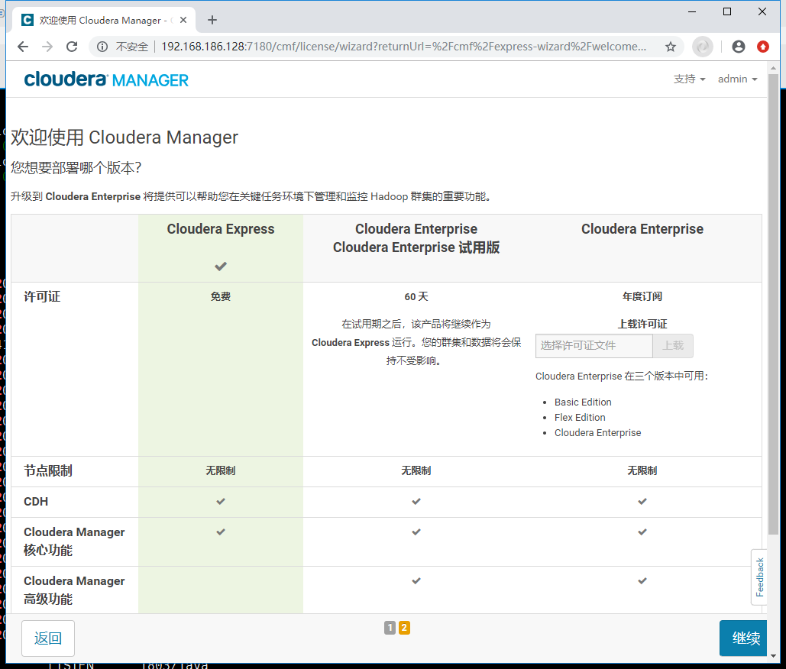
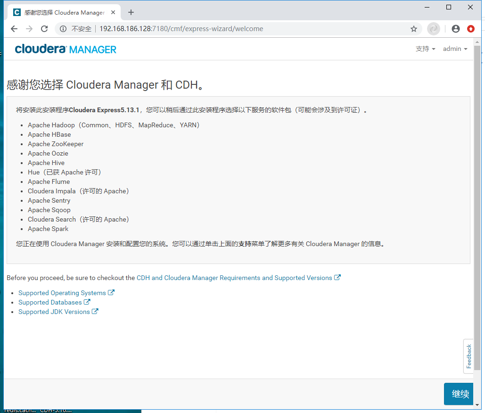
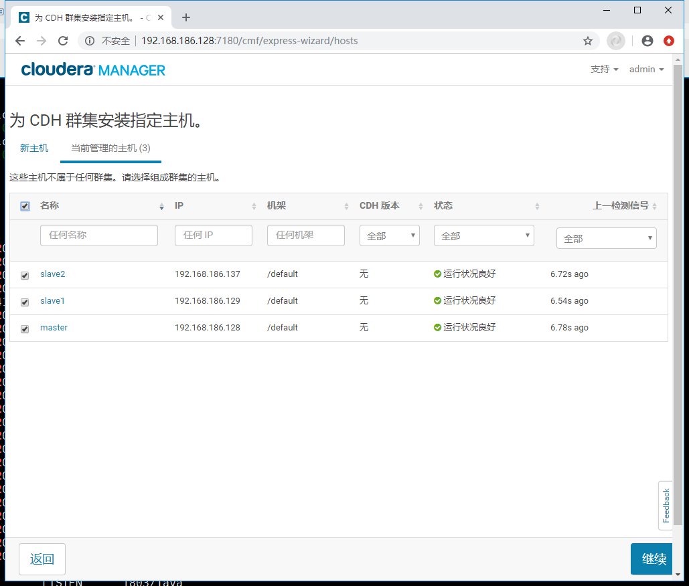
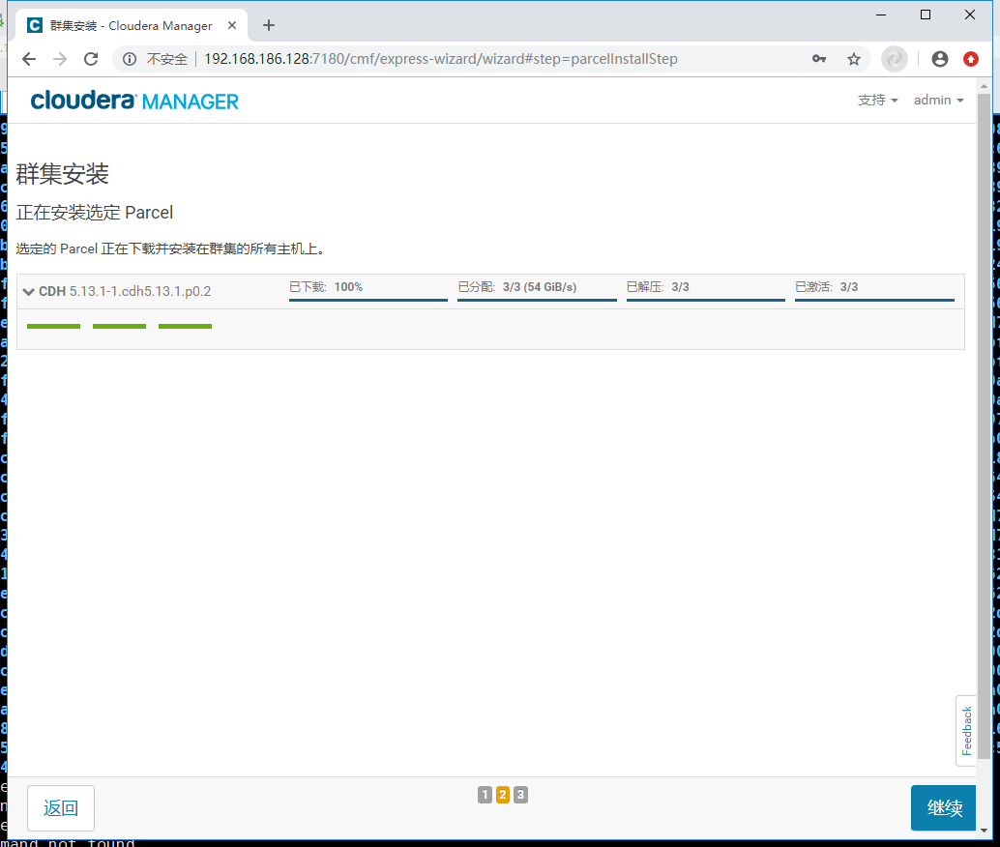
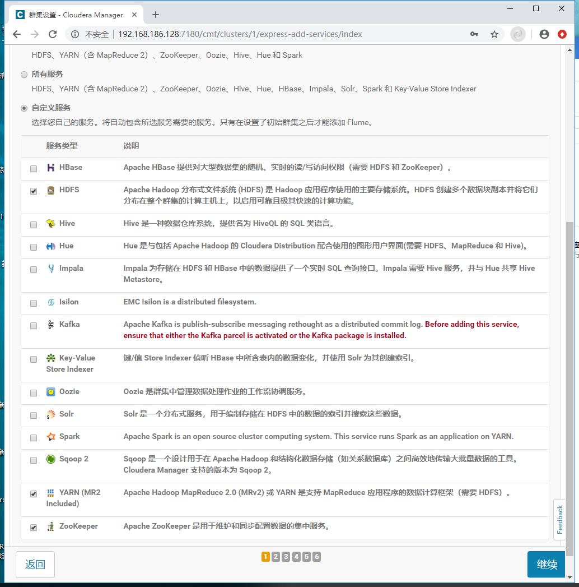
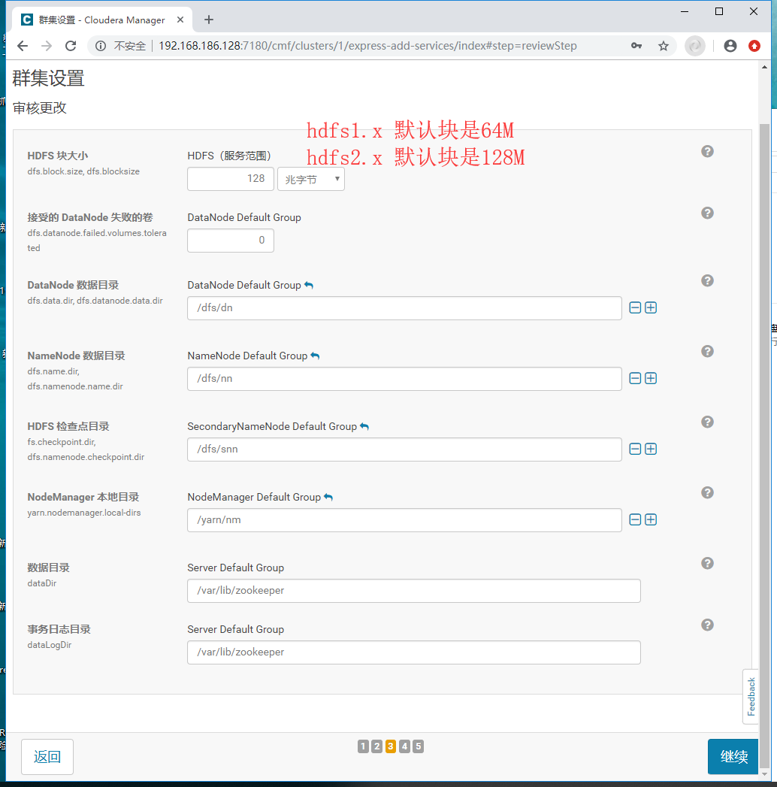
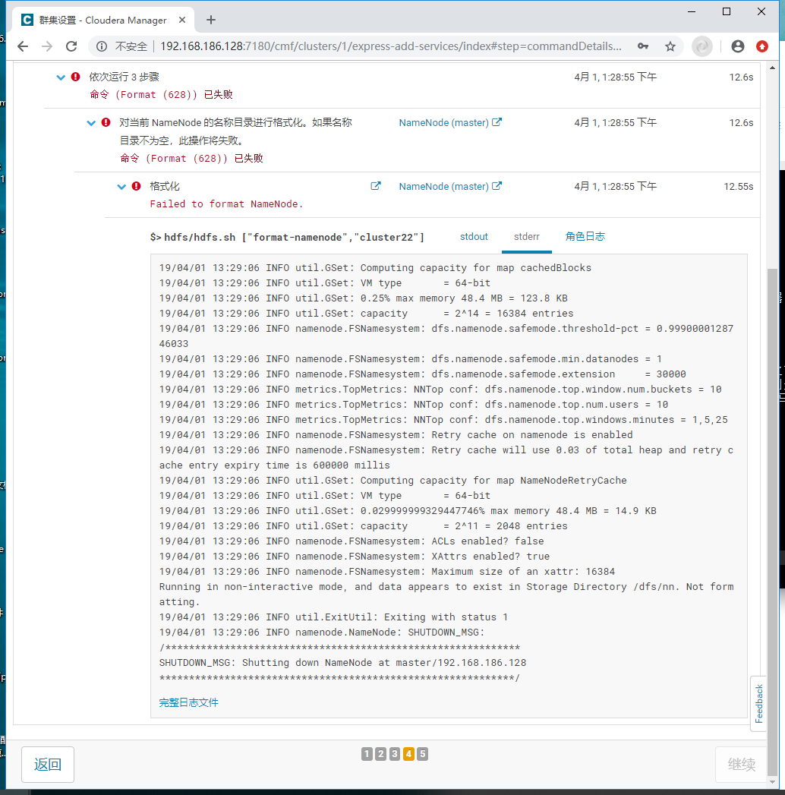
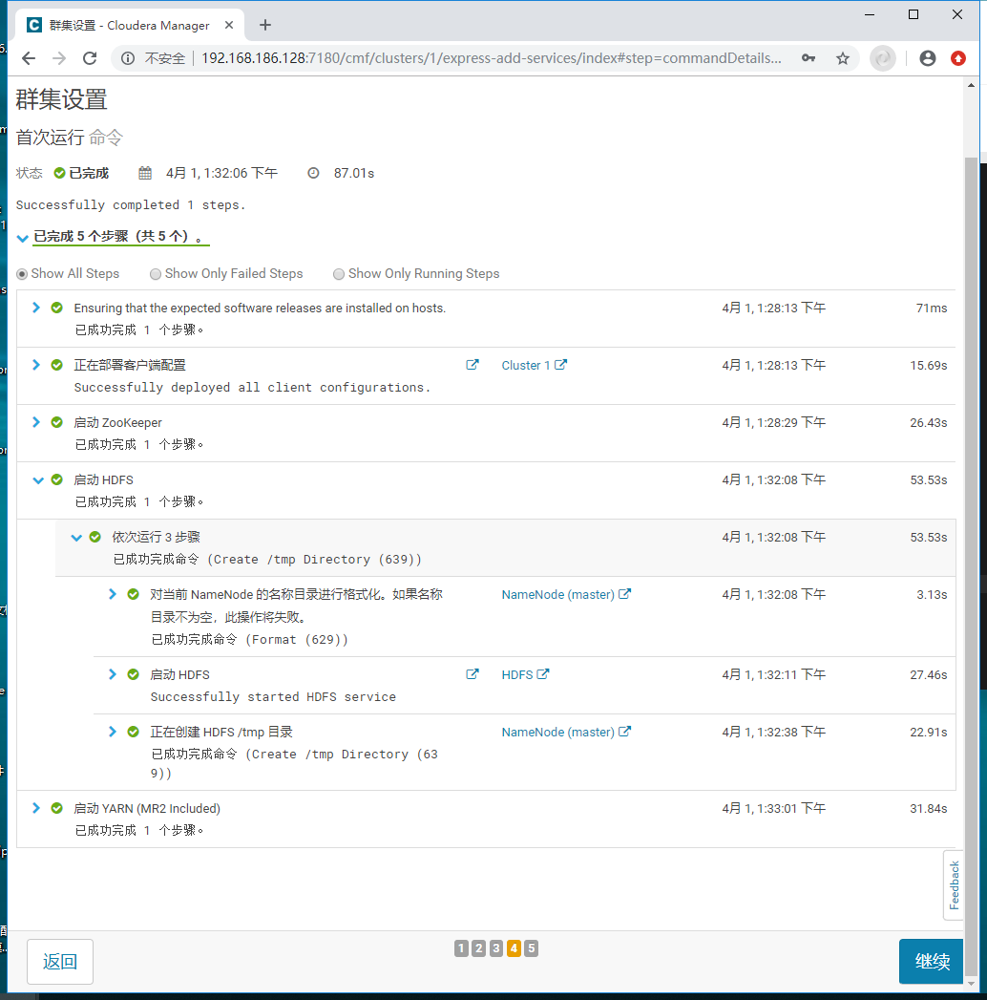
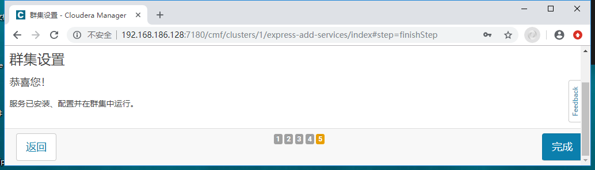

CDH 部署hadoop
1. 部署环境¶
CDH是Cloudera公司对整体hadoop集群环境进行监控与管理的企业级大数据管理平台。
Cloudera Manager分为：
- Cloudera Manager Server：对整个集群提供监控与管理操作。Cloudera Manager Server通过部署在不同设备上的Cloudera Manager Agent进行管理整体集群。Cloudera Manager Server需要部署在一台设备上。
- Cloudera Manager Agent：部署在每个需要监控与管理的设备上。负责采集运行数据与执行下发的管理命令
- DataBase：关系型数据库是Cloudera Manager执行管理操作时，存储整体集群情况数据。

左侧: client 是链接到右侧的server
中间: 也就是clouder-manager server
1. 安装的包可以从在线安装，或者离线安装[一般都是这方式安装]。包一定要放在/opt/cloudera/parcel-repo/，这个是默认的位置[没有就创建]
2. server依赖mysql。
下面: 是agent，默认是15秒，去主动通讯一次. agent的是通过python 调用shell去操作。
本文是基于以下三台机器操作。因为我小米笔记本的硬盘不够，只能勉强跑三个虚拟机。期中master兼职agent。
| IP | 系统 | 身份 | 主机名 | 内存分配 |
|---|---|---|---|---|
| 192.168.186.128 | centos7.5 | master agent1 | master | 5GB |
| 192.168.186.129 | centos7.5 | cdh agent | slave1 | 1GB |
| 192.168.186.137 | centos7.5 | cdh agent | slave2 | 1GB |
master 一定要尽可能分配大一点。否则内存会坑死你，agent可以分配1GB。反正安装CDH尽量大内存机器
[root@slave1 ~]# lsb_release -a LSB Version: :core-4.1-amd64:core-4.1-noarch:cxx-4.1-amd64:cxx-4.1-noarch:desktop-4.1-amd64:desktop-4.1-noarch:languages-4.1-amd64:languages-4.1-noarch:printing-4.1-amd64:printing-4.1-noarch Distributor ID: CentOS Description: CentOS Linux release 7.5.1804 (Core) Release: 7.5.1804 Codename: Core
部署步骤大致如下
1. 以非图行界面启动 2. SSH 优化，时间同步 3. 修改主机名和host文件 4. 配置交换分区 5. 开启ssh免密登录 6. 安装java 7. mysql 8. 安装cdh 9. 配置cdh各个服务 10. 配置hadoop 中ha 11. 启动各个服务，然后安装
cdh-clouder-manager的离线包 cdh的离线包
包解释
通过clouder-manager安装hadoop集群需要下载几个包。我以我下载的包为例讲解: CDH-5.13.1-1.cdh5.13.1.p0.2-el7.parcel # 安装hadoop的包，根据自己的系统下载,el7是centos7,el6是centos6， CDH-5.13.1-1.cdh5.13.1.p0.2-el7.parcel.sha # 包hash值 cloudera-manager-centos7-cm5.13.1_x86_64.tar.gz # clouder-manager安装包 ，根据自己的系统下载，例如 cloudera-manager-trusty-cm5.2.0_amd64.tar.gz是针对ubuntu的[lsb_release -a查看] manifest.json # 配置文件。主要是针对，cdh版本对于的安装那些包等参数
1.1 非图像界面启动¶
减少性能消耗。我以非图形界面方式启动
systemctl set-default multi-user.target
1.2 修改SSH¶
配置ssh
root@ubuntu:/home/cmz# egrep -i 'PermitRootLogin|dns' /etc/ssh/sshd_config |grep -v "#" PermitRootLogin yes UseDNS no root@ubuntu:/home/cmz# /etc/init.d/ssh restart [ ok ] Restarting ssh (via systemctl): ssh.service.
设置时区，cdh会检查各个服务器之间的时间是否通过。时间不一致会出现问题。
root@ubuntu:/usr/local/src/cdh# apt install ntpdate
root@ubuntu:/usr/local/src/cdh# crontab -e
no crontab for root - using an empty one
Select an editor. To change later, run 'select-editor'.
1. /bin/ed
2. /bin/nano <---- easiest
3. /usr/bin/vim.basic
4. /usr/bin/vim.tiny
Choose 1-4 [2]: 3
crontab: installing new crontab
root@ubuntu:/usr/local/src/cdh# tzselect
Please identify a location so that time zone rules can be set correctly.
Please select a continent, ocean, "coord", or "TZ".
1) Africa
2) Americas
3) Antarctica
4) Asia
5) Atlantic Ocean
6) Australia
7) Europe
8) Indian Ocean
9) Pacific Ocean
10) coord - I want to use geographical coordinates.
11) TZ - I want to specify the time zone using the Posix TZ format.
#? 4
Please select a country whose clocks agree with yours.
1) Afghanistan 18) Israel 35) Palestine
2) Armenia 19) Japan 36) Philippines
3) Azerbaijan 20) Jordan 37) Qatar
4) Bahrain 21) Kazakhstan 38) Russia
5) Bangladesh 22) Korea (North) 39) Saudi Arabia
6) Bhutan 23) Korea (South) 40) Singapore
7) Brunei 24) Kuwait 41) Sri Lanka
8) Cambodia 25) Kyrgyzstan 42) Syria
9) China 26) Laos 43) Taiwan
10) Cyprus 27) Lebanon 44) Tajikistan
11) East Timor 28) Macau 45) Thailand
12) Georgia 29) Malaysia 46) Turkmenistan
13) Hong Kong 30) Mongolia 47) United Arab Emirates
14) India 31) Myanmar (Burma) 48) Uzbekistan
15) Indonesia 32) Nepal 49) Vietnam
16) Iran 33) Oman 50) Yemen
17) Iraq 34) Pakistan
#? 9
Please select one of the following time zone regions.
1) Beijing Time
2) Xinjiang Time
#? 1
The following information has been given:
China
Beijing Time
Therefore TZ='Asia/Shanghai' will be used.
Local time is now: Thu Mar 28 16:51:03 CST 2019.
Universal Time is now: Thu Mar 28 08:51:03 UTC 2019.
Is the above information OK?
1) Yes
2) No
#? 1
You can make this change permanent for yourself by appending the line
TZ='Asia/Shanghai'; export TZ
to the file '.profile' in your home directory; then log out and log in again.
Here is that TZ value again, this time on standard output so that you
can use the /usr/bin/tzselect command in shell scripts:
Asia/Shanghai
root@ubuntu:/usr/local/src/cdh# TZ='Asia/Shanghai'; export TZ
root@ubuntu:/usr/local/src/cdh# cp /usr/share/zoneinfo/Asia/Shanghai /etc/localtime
root@ubuntu:/usr/local/src/cdh# crontab -l
*/15 * * * * /usr/sbin/ntpdate pool.ntp.org >/dev/null 2>&1
以上两个步骤，每个机器都做这一步
1.3 修改主机名和host文件¶
echo 'master'>/etc/hostname hostname master bash echo 'save1'>/etc/hostname hostname slave1 bash echo 'slave2'>/etc/hostname hostname slave2 bash
oot@ubuntu:/home/cmz# echo 'master'>/etc/hostname root@ubuntu:/home/cmz# hostname master root@ubuntu:/home/cmz# bash root@master:/home/cmz#
cat>>/etc/hosts<<EOF 192.168.186.128 master 192.168.186.129 slave1 192.168.186.137 slave2 EOF
ping master -c1 ping slave1 -c1 ping slave2 -c1
[root@master ~]# ping master -c1 PING master (192.168.186.128) 56(84) bytes of data. 64 bytes from master (192.168.186.128): icmp_seq=1 ttl=64 time=0.018 ms --- master ping statistics --- 1 packets transmitted, 1 received, 0% packet loss, time 0ms rtt min/avg/max/mdev = 0.018/0.018/0.018/0.000 ms [root@master ~]# ping slave1 -c1 PING slave1 (192.168.186.129) 56(84) bytes of data. 64 bytes from slave1 (192.168.186.129): icmp_seq=1 ttl=64 time=0.291 ms --- slave1 ping statistics --- 1 packets transmitted, 1 received, 0% packet loss, time 0ms rtt min/avg/max/mdev = 0.291/0.291/0.291/0.000 ms [root@master ~]# ping slave2 -c1 PING slave2 (192.168.186.137) 56(84) bytes of data. 64 bytes from slave2 (192.168.186.137): icmp_seq=1 ttl=64 time=0.205 ms --- slave2 ping statistics --- 1 packets transmitted, 1 received, 0% packet loss, time 0ms rtt min/avg/max/mdev = 0.205/0.205/0.205/0.000 ms
1.4 交换分区¶
官方建议是设置交换分区为0
echo "0">> /proc/sys/vm/swappiness sysctl -p cat /proc/sys/vm/swappiness
1.5 免密登录¶
官方要求，CDH的几个机器要做线性关系，也就是无密码登录。CDH都是以root方式运行，所以是做root的免密登录。
root@master:~# ssh-keygen Generating public/private rsa key pair. Enter file in which to save the key (/root/.ssh/id_rsa): Created directory '/root/.ssh'. Enter passphrase (empty for no passphrase): Enter same passphrase again: Your identification has been saved in /root/.ssh/id_rsa. Your public key has been saved in /root/.ssh/id_rsa.pub. The key fingerprint is: SHA256:+QoiIFdrD0UatNHm7IeKBY3OBuf3Tg4WnMZ3B3helO4 root@cdh-master The key's randomart image is: +---[RSA 2048]----+ | .+.. .. | | *o. .. | | o++o o.. | |. ++.+oo +. | |o*..X...S.. | |.o=oo=o..oE | | ..++o+. . | | .o.=.. . | | .o . | +----[SHA256]-----+
ssh-copy-id -i /root/.ssh/id_rsa root@master ssh-copy-id -i /root/.ssh/id_rsa root@slave1 ssh-copy-id -i /root/.ssh/id_rsa root@slave2
[root@master ~]# ssh slave1 Last login: Mon Apr 1 11:42:48 2019 from 192.168.186.1
然后另外的三个机器都样操作。把各自的公约分发到四个机器上。
1.6 JDK¶
hadoop依赖JAVA，我们安装jdk环境。 快速命令
wget http://192.168.1.31:8080/software/cmz/JDK/JDK8_112.zip
root@master:/usr/local/src# wget http://192.168.1.31:8080/software/cmz/JDK/JDK8_112.zip
--2019-03-26 23:17:33-- http://192.168.1.31:8080/software/cmz/JDK/JDK8_112.zip
Connecting to 180.96.7.219:8080... connected.
HTTP request sent, awaiting response... 200 OK
Length: 182583345 (174M) [application/zip]
Saving to: ‘JDK8_112.zip’
JDK8_112.zip 100%[==================================>] 174.12M 3.87MB/s in 61s
2019-03-26 23:18:34 (2.83 MB/s) - ‘JDK8_112.zip’ saved [182583345/182583345]
root@cdh-master:/usr/local/src# unzip JDK8_112.zip
Archive: JDK8_112.zip
inflating: InstallJDK8.sh
inflating: jdk-8u112-linux-x64.tar.gz
root@master:/usr/local/src# cat InstallJDK8.sh
#!/bin/bash
JDKPath=/usr/lib/jvm
SourcePath=/etc/profile
[ ! -f $JDKPath ] && mkdir -p $JDKPath
cd $JDKPath
#rm -rf *
cd -
[ ! -f jdk-8u112-linux-x64.tar.gz ] && echo "The jdk-8u112-linux-x64.tar.gz file is not exist."
tar -xf jdk-8u112-linux-x64.tar.gz -C $JDKPath >/dev/null
cat >>$SourcePath<<EOF
#add by caimengzhi at `date +%F` start
export JAVA_HOME=$JDKPath/jdk1.8.0_112
export JRE_HOME=\${JAVA_HOME}/jre
export CLASSPATH=.:\${JAVA_HOME}/lib:\${JRE_HOME}/lib
export PATH=\${JAVA_HOME}/bin:\$PATH
#add by caimengzhi at `date +%F` end
EOF
. $SourcePath
root@master:/usr/local/src# sh InstallJDK8.sh
/usr/local/src
root@master:/usr/local/src# source /etc/profile
root@master:/usr/local/src# java -version
java version "1.8.0_112"
Java(TM) SE Runtime Environment (build 1.8.0_112-b15)
Java HotSpot(TM) 64-Bit Server VM (build 25.112-b15, mixed mode)
root@master:/usr/local/src# java -version java version "1.8.0_112" Java(TM) SE Runtime Environment (build 1.8.0_112-b15) Java HotSpot(TM) 64-Bit Server VM (build 25.112-b15, mixed mode)
每个机器都做这一步
1.7 mysql¶
安装mysql只在master上操作，而安装mysql jdbc每个机器上都要安装
1.7.1 安装mysql-server¶
[root@master ~]# apt-get install -y mysql-server Reading package lists... Done Building dependency tree
1.7.2 安装mysql jdbc¶
[root@master ~]# apt-get install libmysql-java
1.7.3 配置¶
修改mysql 允许远程登录
root@cdh-master:/usr/local/src# grep -i bind /etc/mysql/mysql.conf.d/mysqld.cnf bind-address = 0.0.0.0 root@cdh-master:/usr/local/src# /etc/init.d/mysql restart [ ok ] Restarting mysql (via systemctl): mysql.service.
生产环境的话，别重启mysql。
快速命令
create database hive DEFAULT CHARSET utf8 COLLATE utf8_general_ci; create database hue DEFAULT CHARSET utf8 COLLATE utf8_general_ci; create database oozie DEFAULT CHARSET utf8 COLLATE utf8_general_ci; create database amon DEFAULT CHARSET utf8 COLLATE utf8_general_ci; create database rman DEFAULT CHARSET utf8 COLLATE utf8_general_ci; create database metastore DEFAULT CHARSET utf8 COLLATE utf8_general_ci; create database sentry DEFAULT CHARSET utf8 COLLATE utf8_general_ci; create database nav DEFAULT CHARSET utf8 COLLATE utf8_general_ci; create database navms DEFAULT CHARSET utf8 COLLATE utf8_general_ci; grant all privileges on *.* to 'root'@'cdh-master' identified by 'root' with grant option; flush privileges;
mysql> create database hive DEFAULT CHARSET utf8 COLLATE utf8_general_ci; Query OK, 1 row affected (0.00 sec) mysql> create database hue DEFAULT CHARSET utf8 COLLATE utf8_general_ci; Query OK, 1 row affected (0.00 sec) mysql> create database oozie DEFAULT CHARSET utf8 COLLATE utf8_general_ci; Query OK, 1 row affected (0.01 sec) mysql> create database amon DEFAULT CHARSET utf8 COLLATE utf8_general_ci; Query OK, 1 row affected (0.00 sec) mysql> create database rman DEFAULT CHARSET utf8 COLLATE utf8_general_ci; Query OK, 1 row affected (0.00 sec) mysql> create database metastore DEFAULT CHARSET utf8 COLLATE utf8_general_ci; Query OK, 1 row affected (0.00 sec) mysql> create database sentry DEFAULT CHARSET utf8 COLLATE utf8_general_ci; Query OK, 1 row affected (0.00 sec) mysql> create database nav DEFAULT CHARSET utf8 COLLATE utf8_general_ci; Query OK, 1 row affected (0.00 sec) mysql> create database navms DEFAULT CHARSET utf8 COLLATE utf8_general_ci; Query OK, 1 row affected (0.00 sec) mysql> grant all privileges on *.* to 'root'@'cdh-master' identified by 'root' with grant option; Query OK, 0 rows affected, 1 warning (0.00 sec) mysql> flush privileges; Query OK, 0 rows affected (0.00 sec) mysql> show databases; +--------------------+ | Database | +--------------------+ | information_schema | | amon | | hive | | hue | | metastore | | mysql | | nav | | navms | | oozie | | performance_schema | | rman | | sentry | | sys | +--------------------+ 13 rows in set (0.09 sec)
1.8 Cloud Manger C/S¶
1.8.1 下载软件包¶
快速命令
mkdir /opt/cloudera-manager axel http://archive.cloudera.com/cm5/cm/5/cloudera-manager-centos7-cm5.13.1_x86_64.tar.gz axel http://archive.cloudera.com/cdh5/parcels/5.13.1/CDH-5.13.1-1.cdh5.13.1.p0.2-el7.parcel axel http://archive.cloudera.com/cdh5/parcels/5.13.1/CDH-5.13.1-1.cdh5.13.1.p0.2-el7.parcel.sha1 axel http://archive.cloudera.com/cdh5/parcels/5.13.1/manifest.json
[root@master parcel-repo]# cd /usr/local/src/ [root@master src]# axel http://archive.cloudera.com/cm5/cm/5/cloudera-manager-centos7-cm5.13.1_x86_64.tar.gz [root@master src]# axel http://archive.cloudera.com/cdh5/parcels/5.13.1/CDH-5.13.1-1.cdh5.13.1.p0.2-el7.parcel [root@master src]# axel http://archive.cloudera.com/cdh5/parcels/5.13.1/CDH-5.13.1-1.cdh5.13.1.p0.2-el7.parcel.sha1 [root@master src]# axel http://archive.cloudera.com/cdh5/parcels/5.13.1/manifest.json
将下载好的cloudera-manager-trusty-cm5.13.1_amd64.tar.gz解压到/opt/cloudera-manager
cd /opt mkdir cloudera # 创建cloudera文件夹 cd cloudera mkdir parcels # 创建parcels文件夹 mkdir parcel-repo # 创建parcel-rep文件夹 cd /usr/local/src/cdh tar -zxf cloudera-manager-xenial-cm5.14.0_amd64.tar.gz -C /opt # 解压cm
[root@master ~]# cd /usr/local/src/ [root@master src]# ll total 1950296 -rw-r--r-- 1 cloudera-scm cloudera-scm 1934231261 Mar 30 21:49 CDH-5.13.1-1.cdh5.13.1.p0.2-el7.parcel -rw-r--r-- 1 cloudera-scm cloudera-scm 41 Mar 30 21:42 CDH-5.13.1-1.cdh5.13.1.p0.2-el7.parcel.sha -rw-r----- 1 root root 73966 Mar 30 23:57 CDH-5.13.1-1.cdh5.13.1.p0.2-el7.parcel.torrent -rw-r----- 1 root root 62709760 Mar 31 00:45 CDH-5.13.3-1.cdh5.13.3.p0.2-el7.parcel.part -rw-r--r-- 1 cloudera-scm cloudera-scm 73766 Feb 23 2018 manifest.json [root@master src]# tar xf cloudera-manager-xenial-cm5.16.1_amd64.tar.gz -C /opt/ [root@master parcel-repo]# ls /opt/cloudera-manager/ cloudera cm-5.13.1
1.8.2 创建用户¶
快速命令
useradd --system --home=/opt/cloudera-manager/cm-5.13.1/run/cloudera-scm-server/ --no-create-home --shell=/bin/false --comment "Cloudera SCM User" cloudera-scm
[root@master ~]# useradd --system --home=/opt/cloudera-manager/cm-5.13.1/run/cloudera-scm-server/ --no-create-home --shell=/bin/false --comment "Cloudera SCM User" cloudera-scm
--home 指向你cloudera-scm-server的路径,所有服务器都要配置，其他机器都要安装省略。
1.8.3 创建存储目录¶
创建cloudera manager server的本地存储目录
mkdir /var/log/cloudera-scm-server chown cloudera-scm:cloudera-scm /var/log/cloudera-scm-server
[root@master ~]# mkdir /var/log/cloudera-scm-server [root@master ~]# chown cloudera-scm:cloudera-scm /var/log/cloudera-scm-server
1.8.4 修改配置文件¶
[root@master ~]# cd /opt/cloudera-manager/cm-5.13.1/etc/cloudera-scm-agent/ [root@master cloudera-scm-agent]# ls config.ini [root@master cloudera-scm-agent]# sed -i "s@server_host=localhost@server_host=cdh-master@g" config.ini [root@master cloudera-scm-agent]# grep server_host config.ini server_host=cdh-master
只在master上操作
1.8.5 分发¶
将cloudera-manager发送到各从节点对应的目录下(即/opt)
rsync -avz /opt/cloudera-manager root@cdh-agent1:/opt rsync -avz /opt/cloudera-manager root@cdh-agent2:/opt rsync -avz /opt/cloudera-manager root@cdh-agent3:/opt
[root@master ~]# rsync -avz /opt/cloudera-manager root@node1:/opt [root@master ~]# rsync -avz /opt/cloudera-manager root@node2:/opt
[root@slave1 ~]# ls /opt/cloudera-manager/ cm-5.13.1 [root@slave2 ~]# ls /opt/cloudera-manager/ cm-5.13.1
1.8.6 主节点创建Parcel目录¶
创建安装包目录，将CHD5相关的Parcel包放到主节点的/opt/cloudera/parcel-repo/目录中
[root@master ~]# mkdir -p /opt/cloudera/parcels [root@master ~]# rsync -avz /usr/local/src/cdh/* /opt/cloudera/parcel-repo/ sending incremental file list CDH-5.13.1-1.cdh5.13.1.p0.2-trusty.parcel CDH-5.13.1-1.cdh5.13.1.p0.2-trusty.parcel.sha cloudera-manager-trusty-cm5.13.1_amd64.tar.gz manifest.json sent 2,633,137,325 bytes received 92 bytes 27,572,119.55 bytes/sec total size is 2,635,696,679 speedup is 1.00 [root@master ~]# cd /opt/cloudera/parcel-repo/ [root@master parcel-repo]# ll total 1950296 -rw-r--r-- 1 cloudera-scm cloudera-scm 1934231261 Mar 30 21:49 CDH-5.13.1-1.cdh5.13.1.p0.2-el7.parcel -rw-r--r-- 1 cloudera-scm cloudera-scm 41 Mar 30 21:42 CDH-5.13.1-1.cdh5.13.1.p0.2-el7.parcel.sha1 -rw-r--r-- 1 cloudera-scm cloudera-scm 73766 Feb 23 2018 manifest.json
注意
一定要把下载的包CDH-5.13.1-1.cdh5.13.1.p0.2-el7.parcel.sha1，后面的1去掉，因为后面离线的安装的时候，依赖这个包，到时候后面要是有1，会自动联网下载
1.8.7 从节点创建Parcel目录¶
[root@slave1 ~]# mkdir -p /opt/cloudera/parcels [root@slave2 ~]# mkdir -p /opt/cloudera/parcels
1.8.8 数据导入¶
[root@master ~]# cd /opt/cloudera-manager/cm-5.13.1/share/cmf/schema/ [root@master schema]# ./scm_prepare_database.sh mysql -uroot -proot --scm-host localhost scm scm root JAVA_HOME=/usr/lib/jvm/jdk1.8.0_112 Verifying that we can write to /opt/cm-5.13.1/etc/cloudera-scm-server Thu Mar 28 02:33:23 PDT 2019 WARN: Establishing SSL connection without server's identity verification is not recommended. According to MySQL 5.5.45+, 5.6.26+ and 5.7.6+ requirements SSL connection must be established by default if explicit option isn't set. For compliance with existing applications not using SSL the verifyServerCertificate property is set to 'false'. You need either to explicitly disable SSL by setting useSSL=false, or set useSSL=true and provide truststore for server certificate verification. Creating SCM configuration file in /opt/cm-5.13.1/etc/cloudera-scm-server groups: ‘cloudera-scm’: no such user Executing: /usr/lib/jvm/jdk1.8.0_112/bin/java -cp /usr/share/java/mysql-connector-java.jar:/usr/share/java/oracle-connector-java.jar:/usr/share/java/postgresql-connector-java.jar:/opt/cm-5.16.1/share/cmf/schema/../lib/* com.cloudera.enterprise.dbutil.DbCommandExecutor /opt/cm-5.13.1/etc/cloudera-scm-server/db.properties com.cloudera.cmf.db. Thu Mar 28 02:33:24 PDT 2019 WARN: Establishing SSL connection without server's identity verification is not recommended. According to MySQL 5.5.45+, 5.6.26+ and 5.7.6+ requirements SSL connection must be established by default if explicit option isn't set. For compliance with existing applications not using SSL the verifyServerCertificate property is set to 'false'. You need either to explicitly disable SSL by setting useSSL=false, or set useSSL=true and provide truststore for server certificate verification. [ main] DbCommandExecutor INFO Successfully connected to database. All done, your SCM database is configured correctly!
只有看到All done, your SCM database is configured correctly!,就表明导入OK，若是有什么log4j什么的错误，可以不用管
1.8.9 启动¶
[root@master ~]# /opt/cloudera-manager/cm-5.13.1/etc/init.d/cloudera-scm-server start [root@master ~]# /opt/cloudera-manager/cm-5.13.1/etc/init.d/cloudera-scm-agent start [root@slave1 ~]# /opt/cloudera-manager/cm-5.13.1/etc/init.d/cloudera-scm-agent start [root@slave2 ~]# /opt/cloudera-manager/cm-5.13.1/etc/init.d/cloudera-scm-agent start
1.8.10 检查¶
[root@master ~]# netstat -lnp|grep 7180 tcp 0 0 0.0.0.0:7180 0.0.0.0:* LISTEN 1750/java
非常注意，我碰见的问题
上周我本地测试cdh的时候，搞一周，差点崩溃，各种奇葩问题，比如 1. 运行运行内存不够，蹦了 2. 虚拟机硬盘不够，蹦了 3. IP地址冲突，断网 4. 虚拟机的cdh启动慢，导致我以为不正常，这奇葩问题导致我都开始怀疑我自己 5. cdh版本和系统不一致，
1.9 安装¶


选择最左边的免费版本。

 点击右侧当前管理的主机按钮。选择所有机器。

若是发现，已选择的正在下载，说明之前你的选项没有选择你之前下载的包，此时即使你在页面取消，也是不行的。只能在系统下kill到进程，然后重新来一遍。因为这系统会在后台下载包，这包都1.8GB左右，猴年马月才能下载完。




 等待安装，错误的时候会有提示。以下有个提示。[因为我之前系统上安装过，我虽然删除了集群。重新安装的时候，之前文件夹还是存在的，所以报错，删除即可，若是线上机器谨慎操作。]

[root@master overlay2]# cd /dfs/nn [root@master nn]# ll total 12 drwxr-xr-x 2 hdfs hdfs 8192 Apr 1 11:54 current [root@master nn]# cd current/ [root@master current]# ls edits_0000000000000000001-0000000000000000079 edits_0000000000000000284-0000000000000000297 edits_0000000000000001311-0000000000000001372 edits_0000000000000000080-0000000000000000087 edits_0000000000000000298-0000000000000000311 edits_0000000000000001406-0000000000000001491 edits_0000000000000000088-0000000000000000101 edits_0000000000000000312-0000000000000000325 edits_0000000000000001492-0000000000000001505 edits_0000000000000000102-0000000000000000115 edits_0000000000000000326-0000000000000000339 edits_0000000000000001506-0000000000000001519 edits_0000000000000000116-0000000000000000129 edits_0000000000000000340-0000000000000000353 edits_0000000000000001520-0000000000000001533 edits_0000000000000000130-0000000000000000143 edits_0000000000000000354-0000000000000000367 edits_0000000000000001534-0000000000000001547 edits_0000000000000000144-0000000000000000157 edits_0000000000000000368-0000000000000000381 edits_0000000000000001548-0000000000000001561 edits_0000000000000000158-0000000000000000171 edits_0000000000000000382-0000000000000000395 edits_0000000000000001562-0000000000000001575 edits_0000000000000000172-0000000000000000185 edits_0000000000000000396-0000000000000000409 fsimage_0000000000000000000 edits_0000000000000000186-0000000000000000199 edits_0000000000000000410-0000000000000000423 fsimage_0000000000000000000.md5 edits_0000000000000000200-0000000000000000213 edits_0000000000000000424-0000000000000000437 fsimage_0000000000000000873 edits_0000000000000000214-0000000000000000227 edits_0000000000000000438-0000000000000000451 fsimage_0000000000000000873.md5 edits_0000000000000000228-0000000000000000241 edits_0000000000000000452-0000000000000000459 seen_txid edits_0000000000000000242-0000000000000000255 edits_0000000000000001133-0000000000000001145 VERSION edits_0000000000000000256-0000000000000000269 edits_0000000000000001146-0000000000000001147 edits_0000000000000000270-0000000000000000283 edits_0000000000000001148-0000000000000001148 [root@master current]# cd .. [root@master nn]# ls current [root@master nn]# cd .. [root@master dfs]# ls dn jn nn snn [root@master dfs]# rm /dfs/nn -rf
删除文件夹后，点击本页面上的resume，重新开始。


 到此cdh安装的hdaoop集群完毕。
到此cdh安装的hdaoop集群完毕。